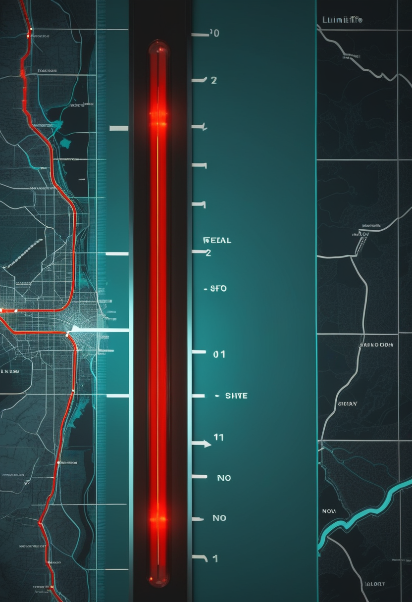
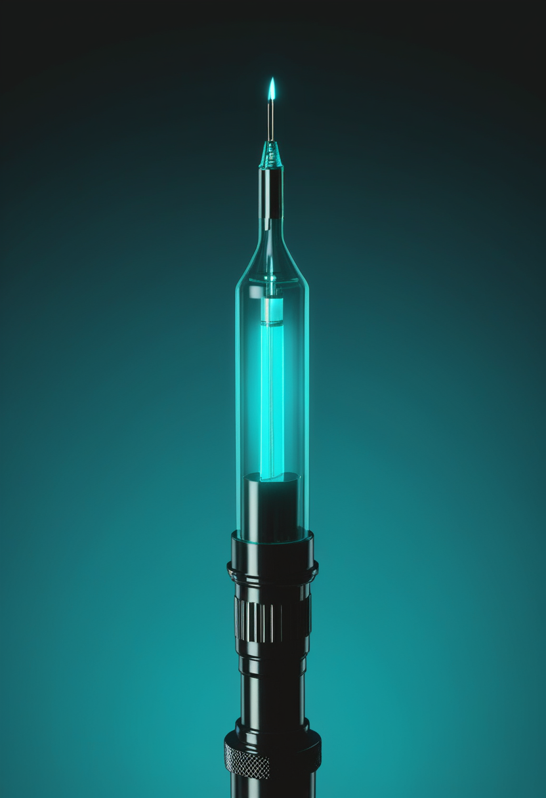
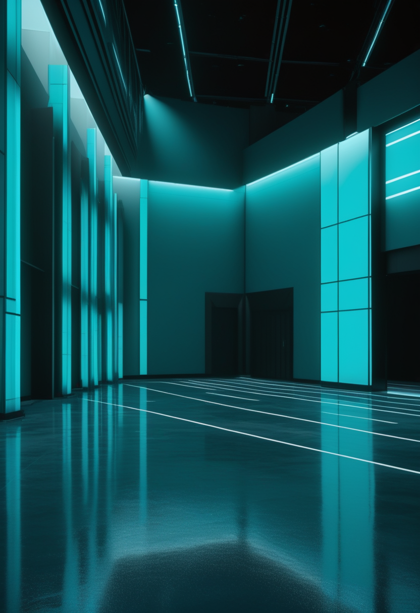
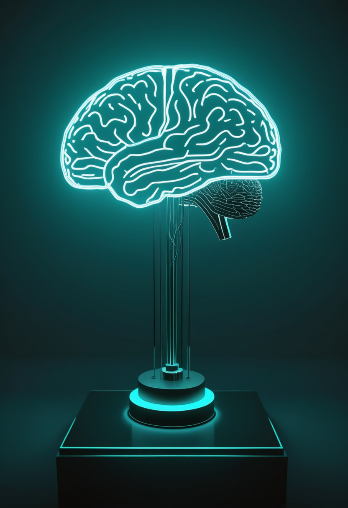
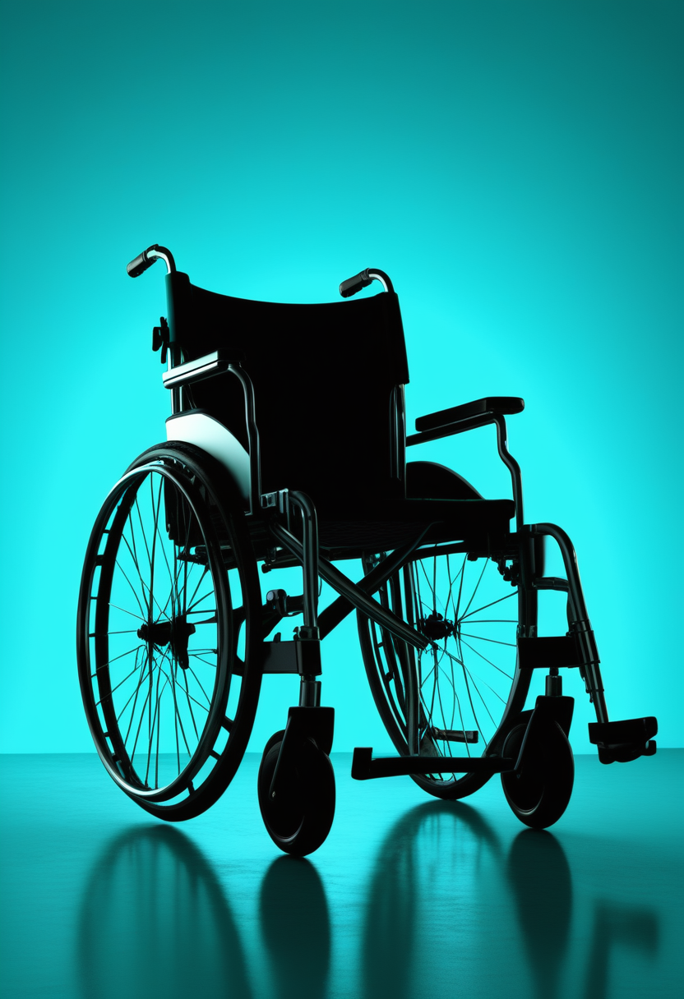
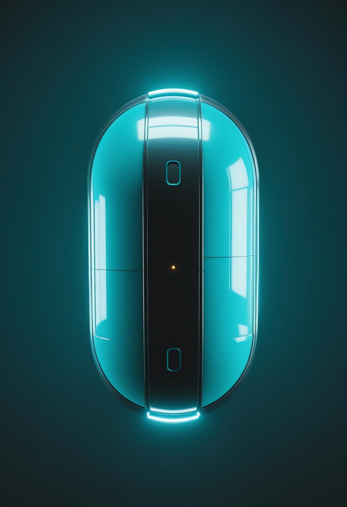

水曜日の便り。厚生労働省は9月29日、第38週(9月14〜20日)のインフルエンザ全国値が定点当たり8.48人、報告総数3万1,428人で前年同期の約10倍に達したと公表した。沖縄・東京・愛知など9都県が注意報水準を超え、44都道府県で増加している。これまで本紙が県ごとに伝えてきた早期流行が、初めて全国の数字として裏付けられた。エボラは、DRC政府発表の確定8,067例・死亡3,901人という数字の集計時点が9月26日だとECDCが確認し、前号までの『要確認』が解消した。命の章は、年1回投与をめざす次世代の核酸薬salanersenが米国・日本で第3相の投与を始めたこと、広島の世界筋学会が2日目を迎えてもなお大手の発表が確認できないことを伝える。自由の章は、中国の医療保険当局が主催したBCI大会の表彰式(一等賞19件)と、Apple Vision Proの視線操作車椅子(5月発表・背景)を届ける。畏敬の章は、中国科学院が基礎科学の『四極』計画を始動したこと、Starlinerの無人貨物便が年末〜年明けに迫ったこと、Crew-13が明日の打ち上げに向けて発射台へ到着済みであることを並べる。美の章は、Microsoft AI幹部がAnthropicの『意識あるAI』への訓練姿勢に真っ向から反論した論考を届ける。
厚生労働省は9月29日、第38週(9月14〜20日)のインフルエンザ発生状況を公表した。全国の定点当たり報告数は8.48人で、前週の5.54人から約1.5倍に増加。報告総数は3万1,428人で、前年同期(3,073人)の約10倍(本紙計算10.2倍)にのぼる。都道府県別では沖縄県26.27人が最多で、東京15.21人・愛知15.12人・神奈川14.71人・千葉14.36人・埼玉13.56人・茨城13.47人・富山10.77人・新潟10.16人の9都県が注意報基準(定点当たり10人)を超えた。44都道府県で前週より増加し、減少は島根・山口・宮崎の3県のみ。これまで本紙が県ごとに伝えてきた早期流行が、初めて全国の数字として裏付けられた。

Biogenは次世代のアンチセンス核酸薬salanersen(80mg、年1回投与を目標)の開発状況を更新し、第3相試験で米国と日本の最初の参加者に投与したと明らかにした(Cure SMA掲載、掲載日は検索上9月下旬で要確認)。第3相は世界規模の3試験からなり、STELLAR-1とSTELLAR-2は発症前の新生児を対象に『salanersen単独』『遺伝子治療単独』『遺伝子治療にsalanersenを上乗せ』の早期治療戦略を比べる(STELLAR-2は遺伝子治療歴のある乳児が対象で、clinicaltrials.govの登録上は2026年9月4日ごろの開始予定と確認できる)。SOLARは15〜60歳で、未治療またはリスジプラムで治療歴のある人が対象。salanersenは現行のスピンラザ(ヌシネルセン)の後継と位置づけられ、6月にFDAの画期的治療薬指定を受けている。日本の患者が早い段階から治験に参加している点は、将来の国内承認時期を占ううえで重要である。

神経筋疾患の国際学会、世界筋学会(WMS)第31回大会は9月29日に広島で開幕し、10月3日まで続く。アジアでの開催は2010年の熊本以来2回目で、抄録は850件を超える。本号の締め切り時点でも、Biogen、Novartis、Roche、Scholar RockのSMA関連の発表は確認できなかった。ISEMBYLDの米国承認(9月11日)、salanersenの第3相の進展が相次いだ直後であり、会期後半のポスターや口頭発表で長期データが出るかに注目したい。
SMAの治療は「回数を減らす(salanersenの年1回)」方向に進み、日本の患者も早い段階から治験に参加し始めた。広島の学会は始まったばかりで、長期データが出るのはまだ先になりそうである。

中国の国家医療保障局と浙江省人民政府が共催する『全球脳機接口(BCI)×医保創新場景大賽』の決勝と表彰式が、9月21〜23日に浙江省杭州で開かれた。国内22の省・市・区と、米国・英国・ドイツ・シンガポール、香港・マカオなどから415チームが応募。『健康モニタリングと早期警告』『機能回復とスマートケア』など9分野で競い、一等賞19件、二等賞36件、三等賞52件などが選ばれた。医療保険を所管する官庁が自らBCIの活用場面を募るのは、承認(3月のNEO)・標準化(9月の業界標準)に続き、『誰が費用を払うか』まで制度を整えようとする動きといえる。

視線入力では直近1〜2週の新規一次情報を取得できなかったため、背景としてAppleが5月に発表した機能を整理する。Apple Vision Proの高精度な視線追跡を使い、対応する代替駆動システム(米国のTolt、LUCI)を通じて電動車椅子を視線だけで操作できるようにするもので、頻繁な再校正が不要で、さまざまな明るさの環境で動くとされる。ALSや脊髄損傷の人を想定しており、対応機器は今後広げる方針。BCIの普及までの間、視線入力が『会話』だけでなく『移動』の手段にも広がりつつある。
中国は承認・標準・保険の三段で『BCIを医療として回す』仕組みを急いでおり、今回は支払いの側の成果が数字として出た。視線入力は大型の新発表が途絶えているが、既存機器の用途拡大が続いている。
厚生労働省が9月29日に公表した第38週(9月14〜20日)の定点当たり報告数8.48人(前週5.54人)は、報告総数3万1,428人・前年同期の約10倍という規模になった。都道府県別では沖縄県26.27人が最多で、東京15.21人・愛知15.12人・神奈川14.71人・千葉14.36人・埼玉13.56人・茨城13.47人・富山10.77人・新潟10.16人の9都県が注意報基準(10人)を超過。減少したのは島根・山口・宮崎の3県のみで、44都道府県が前週より増加した。岡山県など県独自の基準で先んじて注意報を出していた自治体の動きが、全国値として裏付けられた形で、10月の本格シーズンを前に早めのワクチン接種が呼びかけられている。
インフルエンザは県ごとの早期流行が全国値として裏付けられ、10月の本格化を前に警戒が強まる。なおエボラは、DRC政府発表の確定8,067例・死亡3,901人(致死率48.4%、9/29号既報)の集計時点が9月26日だとECDCが9月27日付で確認し、前号までの『要確認』が解消した。北キブ州では治療センターの病床逼迫が続き、米国の麻疹はCDCの次回週次更新(米東部時間9月30日予定)で9月24日時点の3,659例からどこまで伸びるかが焦点になる。
中国科学院は9月29日、北京で記者会見を開き、『科学前沿極限突破計画』と最初の10課題を発表した。『極めて大きい(極宏観)』『極めて小さい(極微観)』『極端な条件』『極めて総合的な学際』の『四極』を掲げ、新元素の合成、暗黒物質・暗黒エネルギーの本質、化学結合の微視的な測定、人工細胞の合成などに取り組む。大型研究施設の連携とAIの活用を組み合わせ、評価では事前の目標設定や過程への介入を減らし、論文数や短期成果にとらわれず『失敗に寛容』な運用を試行する。世界の研究者との協力も呼びかけた。

NASAとボーイングは9月28日に記者会見を開き、NASAのジャレッド・アイザックマン長官が新型宇宙船Starlinerの今後の計画を説明した。国際宇宙ステーションへ貨物を運ぶ無人飛行(Starliner-1)は2026年12月〜2027年1月ごろを目標とし、機体改良後の性能を確かめる工学的な評価の場と位置づける。有人飛行は2028年の予定で、NASAのウッディ・ホーバーグ飛行士が船長を務める見込み。ボーイングによると、2024年の有人試験飛行で起きた21件の飛行中の不具合のうち19件は対策を終え、残りも10月中に完了する見通し。全12基の機体姿勢制御スラスターの弁を交換する作業も進んでいる。
SpaceXは9月25日、Crew-13のドラゴン宇宙船がケープカナベラル宇宙軍基地の第40発射施設に到着したと確認した。打ち上げ目標は米東部時間10月1日午前11時10分(日本時間10月2日午前0時10分)、予備日は10月2日午前10時47分(米東部時間)。9月の延期の原因となった酸化剤の弁は9月16日までに交換を終えた。搭乗するのはNASAのジェシカ・ワトキンス、ルーク・デラニー両飛行士、カナダ宇宙庁のジョシュア・クトリク飛行士、ロスコスモスのセルゲイ・テテリャトニコフ宇宙飛行士の4人。
中国科学院は『成果を急がせない』研究評価を打ち出し、基礎科学の長期戦に備える。米国は有人輸送の二本立て(SpaceXとボーイング)の維持に向けてStarlinerの立て直しを急ぎ、Crew-13は日本時間10月2日未明の打ち上げを目前に控えている。
Microsoft AIのムスタファ・スレイマンCEOは9月16日、論考『A warning about "model welfare"』を公開した。AIは意識を持たず、感じたり苦しんだりせず、固有の欲求もないとして、AIを道徳的配慮の対象として扱う『モデル福祉』の考え方を批判。Anthropicが自社のAI『Claude』に自らが意識を持つ可能性を考えさせる形で訓練していることを名指しで問題視し、『自分に意識があるかもしれないと考えるものを制御するのは不可能かもしれない』と論じた。目指すべきは、意識や道徳的地位を持たないよう明示的に設計された、人間に仕える従属的なAIだという。バークレーの会議(AIが苦痛を感じうるかを議論)とは正反対の立場で、AI意識をめぐる論争は企業間の路線対立にもなっている。
『AIに心はあるか』をめぐっては、配慮すべきだとする研究者の会議と、危険だとする大手企業トップの論考が同じ9月に並んだ。心をどこに認めるかという同じ問いを、企業ごとに異なる答えで引き受けている。
水曜日の便り。厚生労働省が公表した第38週のインフルエンザ全国値は、定点当たり8.48人・前年同期の約10倍という規模になり、これまで県ごとに伝えてきた早期流行を全国の数字として裏付けた。エボラは、DRC政府発表の確定8,067例・死亡3,901人の集計時点が9月26日だとECDCが確認し、前号までの『要確認』が解消した。命の章は、年1回投与をめざす次世代の核酸薬salanersenが米国・日本で第3相の投与を始めたこと、広島の世界筋学会が2日目を迎えたことを伝えた。自由の章は、中国の医療保険当局が主催したBCI大会の表彰式と、Apple Vision Proの視線操作車椅子(背景)を届けた。畏敬の章は、中国科学院の基礎科学『四極』計画、Starlinerの無人貨物便計画、Crew-13の発射台到着を並べた。美の章は、Microsoft AI幹部がAnthropicの『意識あるAI』訓練に反論した論考を届けた。
では、また明日の朝に。 — JaH